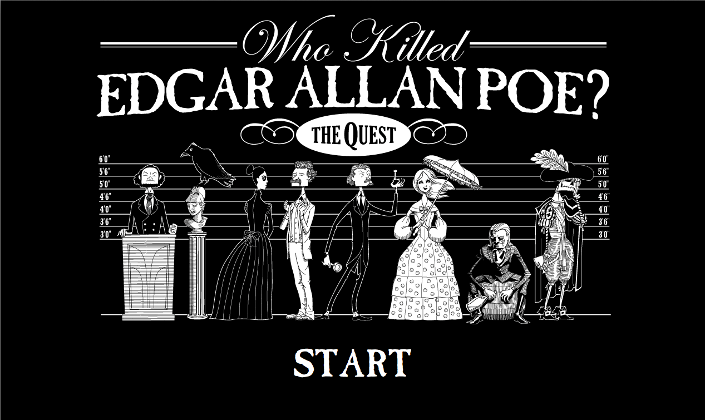
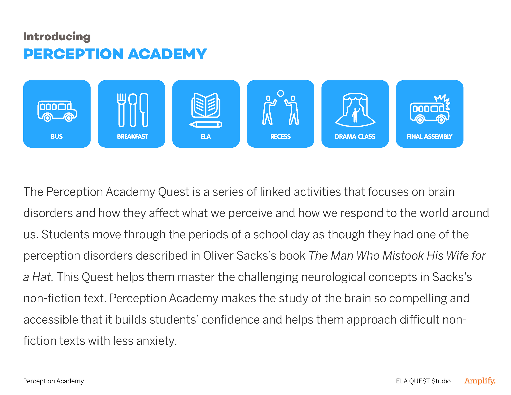
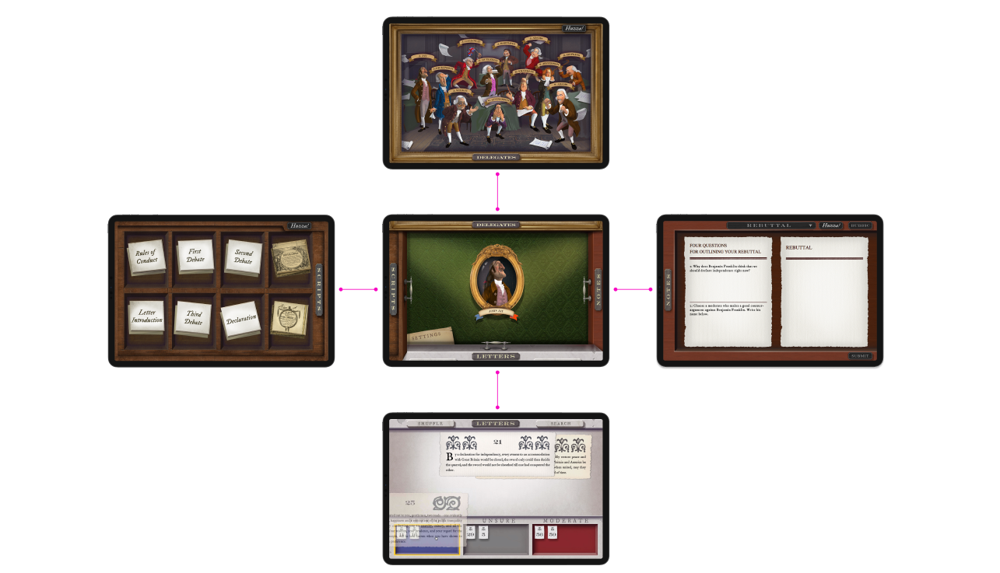
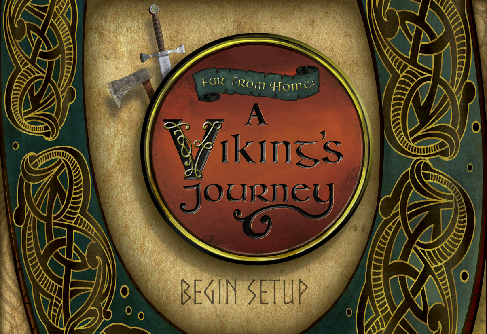
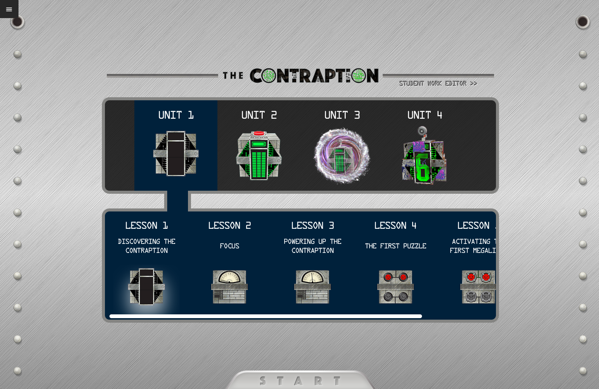
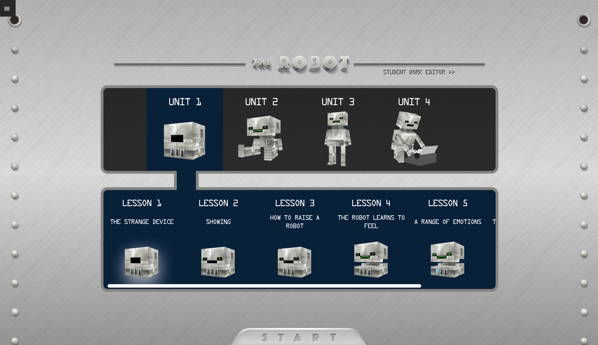
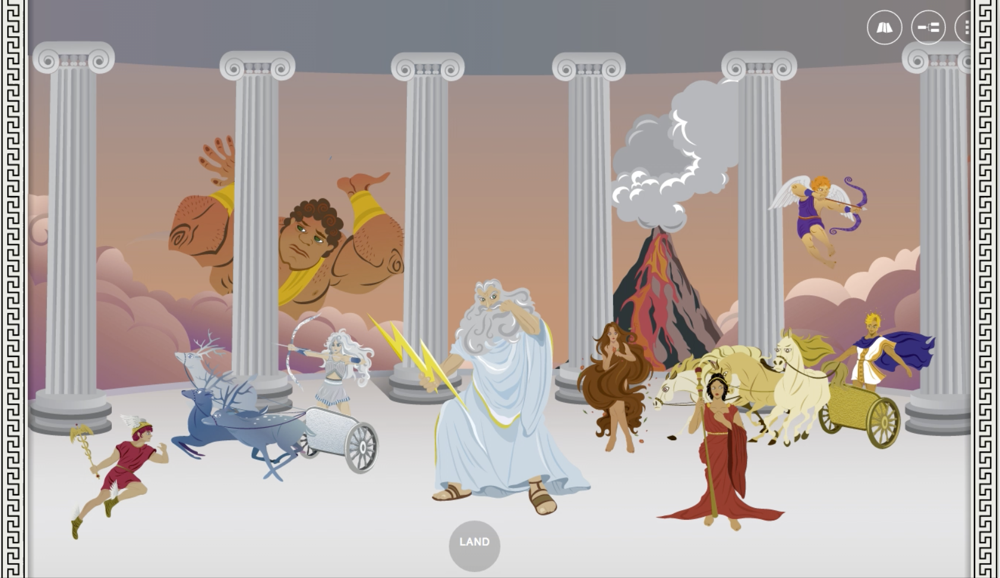

Amplify Education · Product Design · 2014–2025 Amplify Education · プロダクトデザイン · 2014〜2025
Immersive quests that bring AR and storytelling into ELA class. AR とストーリーテリングを国語の教室に運ぶ没入型クエスト。
As Lead Product Designer, I built ready-to-use quest modules — complete 5-day lesson sequences with scripts, teacher guides, embedded assessments, and AR technology — so every teacher, not just the most resourceful ones, could deliver dynamic ELA instruction. The quests reached millions of students across the US. リード・プロダクトデザイナーとして、スクリプト・教師ガイド・組み込みアセスメント・AR技術を備えた5日間完結のクエストモジュールを設計した。目的は、一部の恵まれた教師だけでなく、すべての教師がダイナミックなELA指導を届けられるようにすること。クエストは全米で数百万人の生徒に届いた。
A widening gap 広がる差
Teachers wanted to deliver engaging, immersive ELA instruction, but creating those experiences demanded specialized skills, time, and technical knowledge most educators simply didn't have. 教師たちは魅力的で没入感のあるELA指導を届けたいと考えていたが、そうした体験を作るには専門スキル・時間・技術知識が必要で、ほとんどの教育者にはそれがなかった。
Ready to teach, out of the box そのまま使える教材
Each quest was a complete 5-day lesson sequence with scripts, teacher guides, and embedded assessments — with AR technology for experiential learning built in. 各クエストはスクリプト、教師ガイド、組み込みアセスメントを備えた5日間のレッスンシーケンス。体験学習のためのAR技術が組み込まれている。
Used AR to build empathy, not just spectacle. ARを、演出でなく共感のために使う。
Students moved through a school day as if living with a perception disorder from Oliver Sacks's The Man Who Mistook His Wife for a Hat. AR deepened empathy and understanding of neurological conditions. オリバー・サックスの著書『妻を帽子とまちがえた男』に登場する知覚障害を抱えているかのように学校の1日を過ごす。AR技術が神経疾患への共感と理解を深めた。
Designed a teacher-facing app, not just a lesson plan. レッスンプランでなく、教師向けアプリを設計する。
A step-by-step guide with scripts and flow for the five-day lessons, so any teacher — regardless of prior experience — could confidently run a beautifully crafted quest. 5日間のレッスンのためのスクリプトとフローを含むステップバイステップガイド。経験に関係なく、どの教師も自信を持って美しく構築されたクエストを実施できる。
Let the content design the navigation. コンテンツにナビゲーションを設計させる。
A drawer-based UI, inspired by the historical drawers in congress buildings, let students "pull out" each section by tab — tactile navigation that reflected the Declaration of Independence setting. 議事堂の歴史的な引き出しからインスピレーションを得た引き出し式UIで、タブをクリックして各セクションを「引き出す」。独立宣言という舞台設定を反映した触覚的なナビゲーション。
Embedded assessment inside the story, not after it. 評価を物語の後でなく、内側に組み込む。
Digital interactive notebooks and embedded checkpoints let students collect evidence as they went, enabling data-driven instruction aligned with CCSS. デジタルの対話型ノートブックと組み込みチェックポイントにより、生徒は物語を進めながら証拠を収集できる。CCSS準拠のデータ駆動型指導を可能にした。
Seven quests. Seven different worlds. 7つのクエスト。7つの異なる世界。
From a Gothic murder mystery to a year-long robot writing project, each quest module paired a distinct genre with a distinct interaction pattern. ゴシックな殺人ミステリーから年間を通じたロボットのライティングプロジェクトまで、各クエストモジュールは独自のジャンルと独自のインタラクションパターンを組み合わせている。







It shipped — and stayed live in classrooms. 世に出て、教室で使われ続けている。
Over 10 quest modules launched across grades 3–7, embedded in Amplify's English Language Arts program and reaching millions of students across the US. 3〜7年生にわたり10以上のクエストモジュールをローンチし、Amplifyの英語ELAプログラムに組み込まれ、全米の数百万人の生徒に届いた。
Why it mattered なぜ重要だったか